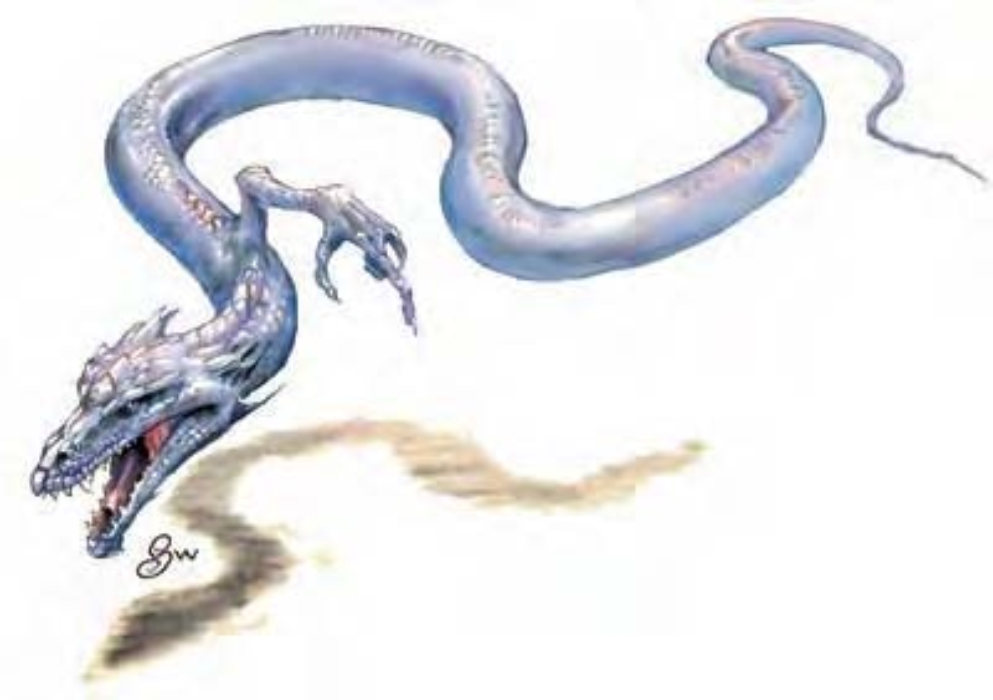

这种生物有水蛇般的长身体，可轻松浮起消失在半空中。一爪突出伸向头畔。
独爪蜃是来自正能量界的生物。这种奇异的个体会经由接触将能量灌注到生物体内，并活化四周的无生命物体。
来到物质界的独爪蜃会漫无目标游荡，后面跟着一堆他们赋予生命的物体。
独爪蜃约7英尺长，重75磅。
| 资料栏位 | 独爪蜃 (Ravid) 中型异界生物 (外界) |
| 生命骰 | 3d8+3 (16HP) |
| 先攻 | +4 |
| 速度 | 20英尺 (4格)、飞行60英尺 (灵活) |
| 防御等级 | 25 (+15天生)、接触10、措手不及25 |
| 基本攻击/擒抱 | +3 / +4 |
| 攻击 | 尾巴拍击+4近战 (1d6+1附加正能量)；或尾巴接触+4近战接触 (正能量) |
| 全力攻击 | 尾巴拍击+4近战 (1d6+1附加正能量) 及 爪抓+2近战 (1d4附加正能量)；或尾巴接触+4近战接触 (正能量) 及 爪抓+2近战接触 (正能量) |
| 占据/触及 | 5英尺 / 5英尺 |
| 特殊攻击 | 正能打击、活化物体 |
| 特殊能力 | 黑暗视觉60英尺、飞行、对火焰免疫 |
| 豁免 | 强韧+4、反射+3、意志+4 |
| 属性 | 力量13、敏捷10、体质13、智力7、感知12、魅力14 |
| 技能 | 脱逃+6、躲藏+6、聆听+7、潜行+6、侦察+7、生存+7、绳技+0 (捆绑+2) |
| 专长 | 精通先攻、多重攻击 |
| 环境 | 正能量界 |
| 组织 | 单独 (1，加上至少1个活化物体) |
| 宝藏 | 无 |
| 阵营 | 总是绝对中立 |
| 进化 | 4HD (中型)；5-9HD (大型) |
| 等级修正值 | ― |
独爪蜃只在自卫时才会进行战斗。他本身能力不强，但会带领多个活化物体以保护他。
正能打击 (超自然)：独爪蜃可进行接触攻击、爪抓或用尾巴拍击，击中目标即可注入正能量。这股能量对活物会造成不舒服的刺痛感，对不死生物则造成2d10点伤害，无论是否为灵体。
活化物体 (超自然)：独爪蜃每轮可随机活化20英尺内的一个物体，一如施展“活化物体”法术 (施法者等级20)。这些物体会尽一切能力保护独爪蜃，但独爪蜃并没有聪明到可以指挥战术。
飞行 (特异)：独爪蜃可随时停止或起飞，视为即时动作。失去此能力的独爪蜃将坠落，且每轮只能进行单动作 (移动动作或攻击动作择一)。
专长：即使没有三种天生武器，独爪蜃仍可使用“多重攻击”。